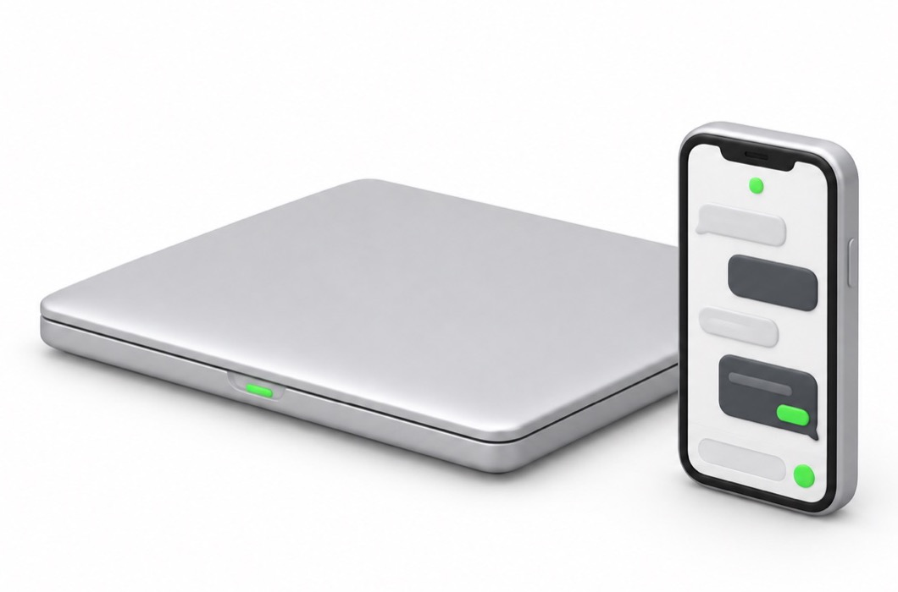

For Claude Code on macOS
Close the lid.
Claude keeps working.
Left home and shut your Mac on the way out? lidless keeps it awake while Claude works, and every session stays on your phone.
Paste in Terminal. Asks for your Mac password once.

1
Laptop stays home
Every session shows up in the Claude app on your phone.
2
No link to copy
Remote Control turns on for every session by itself.
3
Lid shut by habit
The Mac stays awake while Claude works, then sleeps as usual.